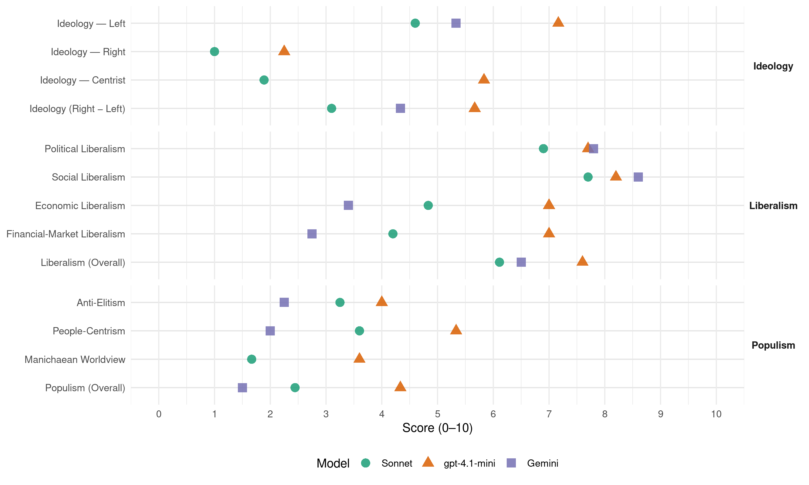

sp.a (Belgium, 2014)
manifesto_id 21321_201405
Get full text: This site shows derived annotations and short verbatim quotes only. The full manifesto text is © Manifesto Project / WZB — obtain it via manifesto-project.wzb.eu using the manifesto_id above.
Headline scores
| Dimension | Sonnet | gpt-4.1-mini | Gemini |
|---|---|---|---|
| Populism (Overall) | 2.4 | 4.3 | 1.5 |
| Anti-Elitism | 3.2 | 4.0 | 2.2 |
| People-Centrism | 3.6 | 5.3 | 2.0 |
| Manichaean Worldview | 1.7 | 3.6 | – |
| Ideology (Right − Left) | 3.1 | 5.7 | 4.3 |
| Liberalism (Overall) | 6.1 | 7.6 | 6.5 |
| Political Liberalism | 6.9 | 7.7 | 7.8 |
| Social Liberalism | 7.7 | 8.2 | 8.6 |
| Economic Liberalism | 4.8 | 7.0 | 3.4 |
| Financial-Market Liberalism | 4.2 | 7.0 | 2.8 |
Evidence per dimension
Economic Liberalism
Gemini · score 4.0 · verified · chunk 1
“grijpen we opnieuw in om de prijzen”
Als de markt niet werkt, grijpen we opnieuw in om de prijzen onder controle te houden.
Gemini · score 5.0 · mixed · chunk 2
“vrij verkeer van personen of diensten”
Belgische antimisbruikmaatregel in een Europees wetgevend kader opnemen. Daarbij werpen we geen barrières op tegen het vrij verkeer van personen of diensten, maar tegen het misbruik dat er soms mee
Gemini · score 5.0 · mixed · chunk 3
“een herziening van het wetboek Financieel Recht”
Al deze kleine en grote regels maken de opstart van nieuwkomers bijna onmogelijk. Ook de huidige spelers krijgen het op deze manier moeilijk om al deze regels te doorgronden. sp.a wil daarom een herziening van het wetboek Financieel Recht, zodat de wetgevingen beter op elkaar zijn afgestemd.
Gemini · score 3.0 · verified · chunk 4
“niet over aan een ongecontroleerde vrije markt”
We laten deze uitdagingen niet over aan een ongecontroleerde vrije markt. Dat zou immers betekenen dat uw
Gemini · score 3.0 · verified · chunk 5
“niet, zelfs niet gedeeltelijk, door private eigenaars gerund worden”
ten allen tijde in overheidshanden en kan het niet, zelfs niet gedeeltelijk, door private eigenaars gerund worden. Die overheid beheert
Gemini · score 3.0 · verified · chunk 6
“verlagen we de BTW op”
een extra duwtje in de rug te geven verlagen we de BTW op de aankoop van (elektrische)
Gemini · score 4.0 · verified · chunk 7
“Wij willen geen winstmaximalisatie in de zorg”
vlak van wachttijden voor verzorging en bij dringende zorg. In een aantal woonzorgcentra, vooral in de commerciële sector, loopt dit nog mis. Bovendien doen er zich ook andere problemen voor: een gebrek aan voldoende geschoold personeel, niet aangepaste infrastructuur, geen aangepast oproepsysteem, geen animatiemogelijkheden, ΅ 819. Wij willen geen winstmaximalisatie in de zorg want dit leidt haast onvermijdelijk tot selectie
Gemini · score 5.0 · mixed · chunk 8
“ondersteuning en diensten biedt om te ondernemen”
flankerend beleid te voeren dat ondernemers in de toeristische sector ondersteuning en diensten biedt om te ondernemen. 978. In de toeristische
Gemini · score 5.0 · mixed · chunk 9
“vrijhandelsakkoorden nastreven met de opkomende economieën”
en investeringspromotie in de landen waar we een handelsrelatie mee hebben. Vrijhandelsakkoorden moeten de toegang tot buitenlandse markten vergroten, maar mogen
gpt-4.1-mini · score 7.0 · verified · chunk 1
“We creëren jobs door gericht de loonlasten te verlagen voor laaggeschoolden, jongeren en ouderen, door in te zetten op innovatie, en door de arbeidsmarkt toegankelijk te maken voor iedereen.”
We sluiten daarom een pact voor jobs. Geen Duitse toestanden, maar een pact voor kwaliteitsvol en werkbaar werk. We creëren jobs door gericht de loonlasten te verlagen voor laaggeschoolden, jongeren en ouderen, door in te zetten op innovatie, en door de arbeidsmarkt toegankelijk te maken voor iedereen. We geloven dat mensen willen werken.
gpt-4.1-mini · score 7.0 · verified · chunk 2
“We maken de fiscaliteit eenvoudiger door de administratie in staat te stellen uit te groeien tot een echte dienstverlener”
Wij halen het geld bij wie nu niet of te weinig betaalt. Zo zorgen we ervoor dat u minder belastingen moet betalen. We maken de fiscaliteit eenvoudiger door de administratie in staat te stellen uit te groeien tot een echte dienstverlener, in plaats van een tegenstander.
gpt-4.1-mini · score 8.0 · verified · chunk 3
“openheid en vertrouwen tussen uw bank en u als ondernemer”
Openheid en vertrouwen tussen uw bank en u als ondernemer beginnen bij duidelijke richtlijnen en criteria. sp.a wil dat banken u op begrijpelijke wijze de ratings en achterliggende waarderingsmodellen bekendmaken.
gpt-4.1-mini · score 7.0 · verified · chunk 4
“We stimuleren en ondersteunen sociale en stedelijke verhuurkantoren”
…422. We stimuleren en ondersteunen sociale en stedelijke verhuurkantoren. Door hun intermediaire positie tussen huurders en verhuurders spelen zij een cruciale rol in het huurbeleid. Enerzijds kunnen zij de verhuurder praktisch bijstaan bij de renovatie en verbetering van de woning.
gpt-4.1-mini · score 7.0 · verified · chunk 5
“We zetten daarom in op kennis, vermarkten en exporteren met het oog op de economische groei”
De productiekosten voor hernieuwbare energie dalen internationaal en zullen dat ook blijven doen in de toekomst. We zetten daarom in op kennis, vermarkten en exporteren met het oog op de economische groei van morgen.
gpt-4.1-mini · score 7.0 · verified · chunk 6
“investeren in duurzame vervoerssystemen”
De opbrengsten van de kilometerheffing gaan naar investeringen in duurzame vervoerssystemen en dit voor alle vormen van vervoer.
gpt-4.1-mini · score 7.0 · verified · chunk 7
“prijzen en kwaliteitsnormen van de zorg collectief vastgelegd worden”
De kwaliteit van de ouderenzorg en thuiszorg is voor ons een belangrijke bekommernis. Daarom moeten prijzen en kwaliteitsnormen van de zorg collectief vastgelegd worden; dit biedt de beste garantie op betaalbare, toegankelijke en kwaliteitsvolle zorg voor iedereen.
gpt-4.1-mini · score 7.0 · verified · chunk 8
“De toeristische sector is een belangrijke motor van economische groei en tewerkstelling in Vlaanderen”
De toeristische sector is een belangrijke motor van economische groei en tewerkstelling in Vlaanderen. De sector biedt ondernemers heel wat kansen en stelt bovendien vaak mensen zonder of met een laag diploma te werk.
gpt-4.1-mini · score 7.0 · verified · chunk 9
“Handel is een krachtige hefboom voor economische en sociale ontwikkeling, maar daarvoor moeten we goede internationale afspraken maken”
Handel is een krachtige hefboom voor economische en sociale ontwikkeling, maar daarvoor moeten we goede internationale afspraken maken en regelgevende kaders scheppen die de voordelen van handel op een faire wijze verdeelt.
gpt-4.1-mini · score 6.0 · verified · chunk 10
“zuiniger omgesprongen met regelgeving”
Ook moet zuiniger omgesprongen worden met regelgeving. Er zijn vandaag te veel regels.
Sonnet · score 5.0 · verified · chunk 1
“Als de markt niet werkt, grijpen we opnieuw in”
We gaan verder op ons elan en houden strikt toezicht op de energieprijzen. Als de markt niet werkt, grijpen we opnieuw in om de prijzen onder controle te houden.
Sonnet · score 5.0 · mixed · chunk 2
“goed draaiende markt”
Dankzij Europa combineren we de sterkste consumentenrechten met een goed draaiende markt.
Sonnet · score 5.0 · mixed · chunk 3
“moratorium op nieuwe grootschalige winkelcentra”
Om de leefbaarheid van onze stedelijke centra niet nog meer onder druk te zetten komt er een moratorium op nieuwe grootschalige winkelcentra.
Sonnet · score 4.0 · verified · chunk 4
“vrije markt in dit kader slechts ziet als middel”
sp.a kiest voor een energiebeleid dat betaalbaarheid, zekerheid en duurzaamheid centraal plaatst en de vrije markt in dit kader slechts ziet als middel en nooit als doel op zich.
Sonnet · score 4.0 · mixed · chunk 5
“Water is geen commercieel product”
Water is geen commercieel product. Drinkwater kan nooit onderhevig zijn aan winstbejag. sp.a verankert het publieke karakter van de volledige waterketen in de wet.
Sonnet · score 4.0 · verified · chunk 6
“vestigingswet voor apotheken”
De vestigingswet voor apotheken, die geen reële meerwaarde biedt voor een toegankelijke, doelmatige en kwalitatieve gezondheidszorg, wordt in zijn huidige vorm afgebouwd
Sonnet · score 4.0 · mixed · chunk 7
“in de toeristische sector pakken we deloyale concurrentie”
978. In de toeristische sector pakken we deloyale concurrentie uit binnen-en buitenland aan. 979. We behouden het logiesdecreet om de kwaliteit van logies te bevorderen, te stroomlijnen en te bewaken.
Sonnet · score 6.0 · verified · chunk 8
“deloyale concurrentie uit binnen-en buitenland”
In de toeristische sector pakken we deloyale concurrentie uit binnen-en buitenland aan
Sonnet · score 5.0 · verified · chunk 9
“vrijhandelsonderhanderlingen, zoals bijvoorbeeld met de VS”
In vrijhandelsonderhanderlingen, zoals bijvoorbeeld met de VS, waken we er over dat onze hoge standaarden voor de bescherming van data beschermd worden.
Sonnet · score 5.0 · verified · chunk 10
“efficiëntiewinsten door intergemeentelijke samenwerking”
Om de dienstverlening op peil te houden moeten gemeentes en OCMW’s op zoek gaan naar efficiëntiewinsten door samenwerking op een hogere schaal.
Financial-Market Liberalism
Gemini · score 3.0 · verified · chunk 1
“woekerrentes aan banden te leggen”
consumentenkredieten waardoor woekerrentes aan banden te leggen en opdringerige kredietpraktijken
Gemini · score 3.0 · verified · chunk 2
“speculatie en exuberante bonussen in de bankenwereld”
druk van sp.a hebben we met de Belgische bankenwet belangrijke stappen gezet om de speculatie en exuberante bonussen in de bankenwereld aan te pakken. Met de bankenwet beschermen
Gemini · score 4.0 · mixed · chunk 3
“kapitaal te verhogen in functie van”
sp.a ijvert er dan ook voor om Europees verder te gaan dan Bazel III/CRD IV en het kapitaal te verhogen in functie van het risico.
Gemini · score 2.0 · verified · chunk 6
“verzekeraars weigeren vandaag resoluut bepaalde”
680. Sommige verzekeraars weigeren vandaag resoluut bepaalde beginnende bestuurders een autoverzekering
Gemini · score 3.0 · verified · chunk 9
“Inkomsten uit een mondiale financiële transactietaks”
klassieke overheidsmiddelen voor ontwikkeling, maar gaan ook op zoek naar nieuwe en toegevoegde financieringsmodi. Inkomsten uit een mondiale financiële transactietaks worden ingezet voor wereldwijde, duurzame ontwikkeling.
gpt-4.1-mini · score 7.0 · verified · chunk 1
“We verstrengden de regels rond consumentenkredieten waardoor woekerrentes aan banden werden gelegd en opdringerige kredietpraktijken werden tegengegaan.”
Er is ook een eengemaakte ombudsdienst voor consumenten en gedupeerden kunnen vandaag samen naar de rechter stappen om schadevergoedingen te eisen. Tot slot organiseerden we groepsaankopen in allerlei domeinen: van gas en elektriciteit tot isolatie en autoverzekeringen. Die aankopen maakten een wezenlijk verschil voor iedereen die deelnam. Er is met andere woorden veel gebeurd, maar ook in de toekomst houden we dezelfde koers aan. We blijven inzetten op koopkracht, transparante prijzen en informatie. Ook bij ingewikkelde producten zoals verzekeringen en leningen. Dat garandeert niet alleen dat de markt werkt, het betekent ook dat u diensten en producten beter kunt vergelijken en de beste keuze kunt maken. Ook met groepsaankopen gaan we verder. Want samen staan we sterker. We zorgen ervoor dat de prijzen van diensten en producten die belangrijk zijn om goed te leven zoals bijvoorbeeld voedsel, energie, verwarming en telecommunicatie niet hoger zijn dan die in onze buurlanden. We doen dat via het recent hervormde prijzenobservatorium. Het principe dat de prijzen van de levensnoodzakelijke goederen niet duurder mogen zijn dan de in ons omringende landen, wordt zoals voor de lonen in de wet vastgelegd. We passen het hypothecair krediet aan zodat u niet alleen beter beschermd wordt, maar er ook meer transparantie komt in tarieven en kosten van woningleningen. We onderzoeken of een kiwi-model waarbij banken bieden op hypothecaire kredietvragen van burgers werkbaar is. Ook bij verzekeringen laten we de markt beter spelen en maken we overstappen makkelijker. Zo kunt u bij koppelverkoop zonder verlies van kortingen die u voor een bepaald onderdeel werden toegekend naar een andere verzekeraar overstappen. Net zoals bij energie en telecom voorzien we ook voor verzekeringen tariefsimulatoren en vergelijkingsmodules. Zo kunt u beter vergelijken en de beste keuze maken. Er komt een beter toezicht op de naleving van beschermingsregels als u een woning bouwt of als u in de toekomst de eigenaar wordt van een nog te bouwen woning. Door het zogenaamde ‘vermoeden van gebrek’ aan een consumptiegoed in de (wettelijke) garantie te verlengen, versterken we uw rechten als consument en kunt u zich rechtstreeks tot de fabrikant wenden. Iedereen is zich bewust van het verband tussen gezondheid en voeding. Maar informatie over voedingsproducten is vaak onvolledig, onoverzichtelijk en complex. Daarom moet u meer en beter geïnformeerd worden over uw aankopen. Er komt een verbeterd Europees voedsellabel met eenvoudige en duidelijke informatie over stoffen en afkomst van het voedsel. Dat label moet duidelijke informatie geven over herkomst, productiewijze en milieubelasting. We stellen dezelfde onduidelijkheid vast bij cosmetische producten. Consumenten worden onrealistische resultaten voorgesteld in advertenties. De bewerkte afbeeldingen ondermijnen het zelfvertrouwen van vrouwen en mannen. De klinische studies waarnaar verwezen wordt, zijn niet representatief of zelfs niet te vinden. We vragen dat de gegevens van het onderzoek naar de resultaten van een cosmetisch product duidelijk weergegeven worden in een advertentie. Deze verduidelijking is vergelijkbaar met de duidelijke ‘kleine lettertjes’ bij een consumentenkrediet. De verschillende nationale handhavingsinstanties werken nauwer samen zodat uw rechten als consument in de hele Europese Unie beschermd worden. Naar Belgisch voorbeeld kunt u samen met andere gedupeerden naar de rechter stappen om een schadevergoeding te eisen wanneer Europese mededingings-of consumentregels overtreden worden. De prijzen in onze supermarkten liggen hoger dan in onze buurlanden. Eén van de oorzaken is dat leveranciers met eigen regels de Europese markt opdelen en hogere prijzen aanrekenen aan Belgische afnemers. Via Europese wetgeving maken we dat voortaan onmogelijk. De Europese markt moet vrij zijn voor iedereen. We zetten verder in op de verankering van Samen Sterker en bieden groepsaankopen aan in elke provincie. Zo krijgen consumenten en kwetsbare groepen meer financiële ademruimte. Strijd tegen schuldenlast Schuldproblemen leiden tot veel miserie. Ze sluiten uit, maken afhankelijk en in vele gevallen arm. We zien dat steeds meer mensen kampen met overmatige schuldenlast. Als sp.a nemen we daarom de handschoen op. Een eerlijke en transparante markt, preventie, kwaliteitsvolle begeleiding en sensibilisering zijn daarbij onze leidraden. Er komt verscherpt toezicht op kredieten en leningen om overmatige schuldenlast te verhinderen. Kredieten dienen om duurzame aankopen te financieren en niet om permanent op krediet te leven. Met het stijgend aantal consumentenkredieten en wanbetalingen die daarmee gepaard gaan, willen we de consument beter beschermen tegen risico’s. We leggen woekerrentes aan banden en voorkomen dat mensen schulden opbouwen. We schaffen kaarten af waardoor je op krediet producten kan kopen bij warenhuizen. We beperken de ronselpraktijken van banken die ongevraagd geadresseerde publiciteit verzenden om aldus nieuwe kredieten te verkopen. We zetten volop in op preventie en sensibilisering. De verschillende instrumenten die daar vandaag voor bestaan, stemmen we beter op elkaar af. We richten de campagnes ook speciaal op jongeren. Het aantal jongeren met schulden stijgt. Daarom maken we jongeren op school al bewust van consumptiegedrag en de impact van schuld door ‘gezond financieel gedrag’ op te nemen in het onderwijscurriculum. 91. Net zoals incassobureaus vallen deurwaarders bij schuldvorderingen voortaan onder de controle van de FOD Economie. De deontologische codes of interne tuchtprocedures volstaan niet om excessen weg te werken. Nog steeds worden allerlei kosten voor aanmaningen, port of dossieropmaak doorgerekend, terwijl dat niet mag. Daarnaast versterken we de bemiddelingsdiensten zodat incassobureaus en deurwaarders minder betrokken hoeven te worden.
gpt-4.1-mini · score 7.0 · verified · chunk 2
“We steunen de invoering van een financiële transactietaks op Europees niveau”
We steunen de invoering van een financiële transactietaks op Europees niveau, en gebruiken de opbrengsten die worden toegewezen aan België om de lasten op arbeid hier te verlagen.
gpt-4.1-mini · score 8.0 · verified · chunk 3
“de nieuwe bankenwet”
Dankzij de nieuwe bankenwet wordt het verboden voor banken om te speculeren voor eigen rekening met uw spaargeld, worden bonussen nog sterker aan banden gelegd en kunnen zelfs worden teruggeroepen via een clawback.
gpt-4.1-mini · score 6.0 · verified · chunk 4
“We bouwen het centraal huurgarantiefonds uit en stimuleren het, waardoor verhuurders zich kunnen verzekeren tegen het risico op wanbetaling”
…435. We bouwen het centraal huurgarantiefonds uit en stimuleren het, waardoor verhuurders zich kunnen verzekeren tegen het risico op wanbetaling. Dit biedt meer zekerheid aan huurders en verhuurders: verhuurders zijn verzekerd van hun inkomen, terwijl huurders niet bij de minste tegenslag het risico lopen uit hun huis gezet te worden.
gpt-4.1-mini · score 7.0 · verified · chunk 9
“België moet actief meewerken aan verplichte identificatie van eigenaars van bedrijven”
België moet actief meewerken aan verplichte identificatie van eigenaars van bedrijven. We verplichten daarnaast land-per-land en project-per-project rapportering door multinationals en financiële groepen om te vermijden dat ze ontsnappen aan eerlijke belastingen.
Sonnet · score 5.0 · verified · chunk 1
“woekerrentes aan banden werden gelegd”
We verstrengden de regels rond consumentenkredieten waardoor woekerrentes aan banden werden gelegd en opdringerige kredietpraktijken werden tegengegaan.
Sonnet · score 4.0 · mixed · chunk 2
“financiële transactietaks op Europees niveau”
We steunen de invoering van een financiële transactietaks op Europees niveau, en gebruiken de opbrengsten die worden toegewezen aan België om de lasten op arbeid hier te verlagen.
Sonnet · score 5.0 · mixed · chunk 3
“banken aan veel strengere regels voldoen”
wordt het bankentoezicht naar het Europese niveau getild en moeten banken aan veel strengere regels voldoen.
Sonnet · score 4.0 · verified · chunk 4
“banken vragen is stelselmatig verhoogd”
Ook de eigen inbreng die de banken vragen is stelselmatig verhoogd, zodat een lening aangaan zonder steun van ouders en familie een quasi-onmogelijke opdracht geworden is.
Sonnet · score 3.0 · verified · chunk 5
“speculatie met uitstootrechten”
sp.a verzet zich tegen speculatie met uitstootrechten. Het kan niet dat emissierechten duur verkocht worden om nadien goedkopere emissierechten in het buitenland aan te kopen.
Sonnet · score 6.0 · verified · chunk 8
“toegang tot kapitaal, reguliere ondernemersnetwerken”
We stellen vast dat zij moeilijker toegang vinden tot kapitaal, reguliere ondernemersnetwerken en relevante overheidsinitiatieven
Sonnet · score 3.0 · verified · chunk 9
“financiële markten opnieuw ten dienste staan”
Voor sp.a moeten de financiële markten opnieuw ten dienste staan van de reële economie, de werknemers en de productieve bedrijven.
Political Liberalism
Gemini · score 8.0 · verified · chunk 1
“fundamentele recht op gelijke kansen”
Iedereen heeft immers het fundamentele recht op gelijke kansen op de arbeidsmarkt.
Gemini · score 8.0 · verified · chunk 2
“burgers worden beschermd tegen overheidscensuur”
geweld tegen vrouwen en kinderen vinden we verwerpelijk, kinderarbeid is strafbaar, holebi’s kunnen vrij samenwonen en burgers worden beschermd tegen overheidscensuur. Het gedeelde verlangen naar sociale rechtvaardigheid
Gemini · score 7.0 · verified · chunk 3
“parlementaire controle op de toezichthouder, zoals”
232. sp.a pleit voor parlementaire controle op de toezichthouder, zoals door het Europees Parlement op de Europese Centrale Bank (ECB) inzake het bankentoezicht.
Gemini · score 8.0 · verified · chunk 4
“rechtswaarborgen voor jongeren in de jeugdzorg”
395. We garanderen rechtswaarborgen voor jongeren in de jeugdzorg en de jeugdhulp. Als het toch misloopt
Gemini · score 7.0 · verified · chunk 5
“onafhankelijke positie van de handhavers”
nodige garanties geboden voor de onafhankelijke positie van de handhavers. In dit kader
Gemini · score 8.0 · verified · chunk 6
“respect voor de persoonlijke levenssfeer”
veiligheid creëren en het respect voor de persoonlijke levenssfeer en de privacy. Het gebruik
Gemini · score 8.0 · verified · chunk 7
“voorwaarde voor een open en democratische samenleving”
is voor sp.a een basisvoorwaarde voor een democratische samenleving, waarin creatieve
Gemini · score 8.0 · verified · chunk 8
“onmisbaar voor een democratische samenleving”
Vrije, kritische, pluralistische en goed draaiende media zijn onmisbaar voor een democratische samenleving. Media bezorgen burgers de informatie
Gemini · score 8.0 · verified · chunk 9
“democratisch systeem, gesteund op inspraak en rechtsstaat”
rechten en vrijheden van de mens. Dit kan door een democratisch systeem, gesteund op inspraak en rechtsstaat. De aanwezigheid van verschillende politieke partijen en
Gemini · score 8.0 · verified · chunk 10
“sterke democratische legitimiteit”
gemeentelijke niveau geniet eerst en vooral een sterke democratische legitimiteit: de lokale verkiezingen krijgen veel
gpt-4.1-mini · score 8.0 · verified · chunk 1
“De overheid moet discriminatie op de arbeidsmarkt actief opsporen en aanpakken.”
Discriminatie en racisme zijn daarom een bezorgdheid van de hele maatschappij. In plaats van discriminatie te relativeren en te minimaliseren, gaat sp.a voor een anti-discriminatie beleid mét tanden. Iedereen heeft immers het fundamentele recht op gelijke kansen op de arbeidsmarkt. De overheid moet discriminatie op de arbeidsmarkt actief opsporen en aanpakken.
gpt-4.1-mini · score 8.0 · verified · chunk 2
“De EU is een unieke samenwerking gebaseerd op waarden als vrijheid, gelijkheid en verbondenheid”
De Europese samenwerking heeft niet alleen een eeuwenlange periode van oorlogen afgesloten, het heeft Europa tot een van de meest welvarende regio’s ter wereld gemaakt met de sterkste sociale bescherming en de hoogste levensstandaard ter wereld. De EU is een unieke samenwerking gebaseerd op waarden als vrijheid, gelijkheid en verbondenheid.
gpt-4.1-mini · score 7.0 · verified · chunk 3
“parlementaire controle op de toezichthouder”
sp.a pleit voor parlementaire controle op de toezichthouder, zoals door het Europees Parlement op de Europese Centrale Bank (ECB) inzake het bankentoezicht.
gpt-4.1-mini · score 8.0 · verified · chunk 4
“We garanderen rechtswaarborgen voor jongeren in de jeugdzorg en de jeugdhulp”
…We garanderen rechtswaarborgen voor jongeren in de jeugdzorg en de jeugdhulp. Als het toch misloopt, zetten we in op werkstraffen en taken van maatschappelijk nut om verdere ontsporingen te vermijden.
gpt-4.1-mini · score 8.0 · verified · chunk 5
“sp.a blijft geloven in een Europese Unie die bakens uitzet”
Deze vaststelling verlamt ons echter niet. sp.a blijft geloven in een Europese Unie die bakens uitzet en een versterkte samenwerking tussen continenten op het wereldtoneel. Bovendien stellen we vast dat één en ander beweegt van onderuit in de samenleving, en dat is hoopvol.
gpt-4.1-mini · score 7.0 · verified · chunk 6
“decreet op de basismobiliteit”
Veel mensen zijn en zullen ook in de toekomst afhankelijk blijven van het openbaar vervoer, zowel in onze steden als in een minder verstedelijkte omgeving. We houden daarom vast aan het decreet op de basismobiliteit. Een nobel beleidsprincipe als basismobiliteit kan evenwel niet langer zonder het formuleren van scherpere keuzes over waar we in het Vlaanderen van morgen zullen wonen, werken of ontspannen.
gpt-4.1-mini · score 8.0 · verified · chunk 7
“Iedereen heeft eigen interesses en een eigen levensgeschiedenis”
sp.a kiest in de ouderenzorg en thuiszorg voor een doortastende verschuiving van aanbodgestuurde naar behoeftengestuurde zorg. Iedereen heeft eigen interesses en een eigen levensgeschiedenis en familiale achtergrond, maar ook eigen sociale en gezondheidsbehoeften, eigen capaciteiten en eigen voorkeuren. Zorgvoorzieningen hebben de taak om de persoonlijke integriteit van de gebruikers te respecteren met het doel hun levenskwaliteit te verhogen.. 807. Met elke gebruiker wordt een persoonlijk zorgplan opgemaakt op basis van een accurate inschaling van de zorgnoden.
gpt-4.1-mini · score 8.0 · verified · chunk 8
“Vrije, pluralistische en kritische media zijn onmisbaar voor een democratische samenleving”
Vrije, kritische, pluralistische en goed draaiende media zijn onmisbaar voor een democratische samenleving. Media bezorgen burgers de informatie die zij nodig hebben, leveren hen opinies, kritische stemmen, sociale contacten en ontspanning.
gpt-4.1-mini · score 8.0 · verified · chunk 9
“Democratie is de beste garantie voor de vrijheid van en de solidariteit tussen individuen”
Democratie is de beste garantie voor de vrijheid van en de solidariteit tussen individuen. Een vrije ontplooiing in menselijke waardigheid voor allen vereist de vrijwaring van de fundamentele rechten en vrijheden van de mens.
gpt-4.1-mini · score 7.0 · verified · chunk 10
“sterke democratische legitimiteit”
Het gemeentelijke niveau geniet eerst en vooral een sterke democratische legitimiteit: de lokale verkiezingen krijgen veel aandacht in de media, en eenmaal verkozen worden burgemeesters en schepenen scherp gevolgd in de pers.
Sonnet · score 6.0 · verified · chunk 1
“onafhankelijke regulatoren strikt toezicht”
We gaan verder op ons elan en houden via onafhankelijke regulatoren strikt toezicht op de marktprijzen. Als de markt niet werkt, grijpen we opnieuw in om de prijzen onder controle te houden.
Sonnet · score 7.0 · verified · chunk 2
“transparanter en democratischer verlopen”
Tot slot moet ook de werking van de ECB transparanter en democratischer verlopen. De voorzitter wordt bevestigd door het Europees Parlement.
Sonnet · score 7.0 · verified · chunk 3
“parlementaire controle op de toezichthouder”
sp.a pleit voor parlementaire controle op de toezichthouder, zoals door het Europees Parlement op de Europese Centrale Bank (ECB) inzake het bankentoezicht.
Sonnet · score 7.0 · verified · chunk 4
“rechtswaarborgen voor jongeren in de jeugdzorg”
We garanderen rechtswaarborgen voor jongeren in de jeugdzorg en de jeugdhulp. Als het toch misloopt, zetten we in op werkstraffen en taken van maatschappelijk nut.
Sonnet · score 7.0 · verified · chunk 5
“sp.a blijft geloven in een Europese Unie”
sp.a blijft geloven in een Europese Unie die bakens uitzet en een versterkte samenwerking tussen continenten op het wereldtoneel.
Sonnet · score 7.0 · verified · chunk 6
“fundamentele rechten en vrijheden bewaakt”
We zorgen ervoor dat de fundamentele rechten en vrijheden bewaakt worden door een rechter van de vrijheden en door de steeds grotere betrokkenheid van de advocaat
Sonnet · score 7.0 · verified · chunk 7
“cultuur voor een democratische samenleving”
849. sp.a stelt met overtuiging dat moet worden geïnvesteerd in cultuur. De overheid heeft een cruciale rol in de ondersteuning van alle vormen van cultuur. 850. We kiezen voor een beleid waarbij iedereen eerlijke kansen krijgt… Cultuur als voorwaarde voor een open en democratische samenleving
Sonnet · score 8.0 · verified · chunk 8
“onmisbaar voor een democratische samenleving”
Vrije, kritische, pluralistische en goed draaiende media zijn onmisbaar voor een democratische samenleving
Sonnet · score 7.0 · verified · chunk 9
“Democratie is de beste garantie voor de vrijheid”
Democratie is de beste garantie voor de vrijheid van en de solidariteit tussen individuen. Een vrije ontplooiing in menselijke waardigheid voor allen vereist de vrijwaring van de fundamentele rechten en vrijheden van de mens.
Sonnet · score 6.0 · verified · chunk 10
“democratische controle op en de efficiëntie van de overheid”
Deze maatregel verhoogt de democratische controle op en de efficiëntie van de overheid.
Liberalism (Overall)
Gemini · score 6.0 · verified · chunk 1
“vrijheid en gelijkheid zijn de basis”
Vrijheid en gelijkheid zijn de basis van een goed werkende markt.
Gemini · score 6.0 · verified · chunk 2
“burgers worden beschermd tegen overheidscensuur”
geweld tegen vrouwen en kinderen vinden we verwerpelijk, kinderarbeid is strafbaar, holebi’s kunnen vrij samenwonen en burgers worden beschermd tegen overheidscensuur. Het gedeelde verlangen naar sociale rechtvaardigheid
Gemini · score 6.0 · verified · chunk 3
“parlementaire controle op de toezichthouder, zoals”
232. sp.a pleit voor parlementaire controle op de toezichthouder, zoals door het Europees Parlement op de Europese Centrale Bank (ECB) inzake het bankentoezicht.
Gemini · score 7.0 · verified · chunk 4
“rechtswaarborgen voor jongeren in de jeugdzorg”
395. We garanderen rechtswaarborgen voor jongeren in de jeugdzorg en de jeugdhulp. Als het toch misloopt
Gemini · score 6.0 · verified · chunk 5
“onafhankelijke positie van de handhavers”
nodige garanties geboden voor de onafhankelijke positie van de handhavers. In dit kader
Gemini · score 6.0 · verified · chunk 6
“respect voor de persoonlijke levenssfeer”
veiligheid creëren en het respect voor de persoonlijke levenssfeer en de privacy. Het gebruik
Gemini · score 7.0 · verified · chunk 7
“voorwaarde voor een open en democratische samenleving”
is voor sp.a een basisvoorwaarde voor een democratische samenleving, waarin creatieve
Gemini · score 7.0 · verified · chunk 8
“onmisbaar voor een democratische samenleving”
Vrije, kritische, pluralistische en goed draaiende media zijn onmisbaar voor een democratische samenleving. Media bezorgen burgers de informatie
Gemini · score 6.0 · verified · chunk 9
“democratisch systeem, gesteund op inspraak en rechtsstaat”
rechten en vrijheden van de mens. Dit kan door een democratisch systeem, gesteund op inspraak en rechtsstaat. De aanwezigheid van verschillende politieke partijen en
Gemini · score 8.0 · verified · chunk 10
“sterke democratische legitimiteit”
gemeentelijke niveau geniet eerst en vooral een sterke democratische legitimiteit: de lokale verkiezingen krijgen veel
gpt-4.1-mini · score 8.0 · verified · chunk 1
“Iedereen heeft immers het fundamentele recht op gelijke kansen op de arbeidsmarkt.”
Discriminatie en racisme zijn daarom een bezorgdheid van de hele maatschappij. In plaats van discriminatie te relativeren en te minimaliseren, gaat sp.a voor een anti-discriminatie beleid mét tanden. Iedereen heeft immers het fundamentele recht op gelijke kansen op de arbeidsmarkt. De overheid moet discriminatie op de arbeidsmarkt actief opsporen en aanpakken.
gpt-4.1-mini · score 8.0 · verified · chunk 2
“De EU is een unieke samenwerking gebaseerd op waarden als vrijheid, gelijkheid en verbondenheid”
De Europese samenwerking heeft niet alleen een eeuwenlange periode van oorlogen afgesloten, het heeft Europa tot een van de meest welvarende regio’s ter wereld gemaakt met de sterkste sociale bescherming en de hoogste levensstandaard ter wereld. De EU is een unieke samenwerking gebaseerd op waarden als vrijheid, gelijkheid en verbondenheid.
gpt-4.1-mini · score 8.0 · verified · chunk 3
“de nieuwe bankenwet”
Dankzij de nieuwe bankenwet wordt het verboden voor banken om te speculeren voor eigen rekening met uw spaargeld, worden bonussen nog sterker aan banden gelegd en kunnen zelfs worden teruggeroepen via een clawback.
gpt-4.1-mini · score 8.0 · verified · chunk 4
“We bestrijden alle vormen van discriminatie en maatschappelijke uitsluiting en hebben continu aandacht voor de rechten en noden van jongeren”
…gericht op een rechtvaardige en welzijnsbevorderende samenleving. We bestrijden alle vormen van discriminatie en maatschappelijke uitsluiting en hebben continu aandacht voor de rechten en noden van jongeren. sp.a gaat uit van de verantwoordelijkheid van jongeren, rekening houdend met de thuissituatie, en opteert voor constructief sanctioneren met noodzakelijke rechtswaarborgen.
gpt-4.1-mini · score 7.0 · verified · chunk 5
“sp.a blijft geloven in een Europese Unie die bakens uitzet”
Deze vaststelling verlamt ons echter niet. sp.a blijft geloven in een Europese Unie die bakens uitzet en een versterkte samenwerking tussen continenten op het wereldtoneel. Bovendien stellen we vast dat één en ander beweegt van onderuit in de samenleving, en dat is hoopvol.
gpt-4.1-mini · score 7.0 · verified · chunk 6
“sociale en financiële drempels bouwen we stelselmatig af”
Efficiëntiewinsten die we boeken door onze gezondheidszorg doelmatiger te organiseren, investeren we in het versterken van onze zorg. Sociale en financiële drempels bouwen we stelselmatig af. We blijven de verplichte verzekering versterken. Zo garanderen we dat onze gezondheidszorg iedereen het beste biedt.
gpt-4.1-mini · score 8.0 · verified · chunk 7
“prijzen en kwaliteitsnormen van de zorg collectief vastgelegd worden”
De kwaliteit van de ouderenzorg en thuiszorg is voor ons een belangrijke bekommernis. Daarom moeten prijzen en kwaliteitsnormen van de zorg collectief vastgelegd worden; dit biedt de beste garantie op betaalbare, toegankelijke en kwaliteitsvolle zorg voor iedereen.
gpt-4.1-mini · score 8.0 · verified · chunk 8
“Vrije, pluralistische en kritische media zijn onmisbaar voor een democratische samenleving”
Vrije, kritische, pluralistische en goed draaiende media zijn onmisbaar voor een democratische samenleving. Media bezorgen burgers de informatie die zij nodig hebben, leveren hen opinies, kritische stemmen, sociale contacten en ontspanning.
gpt-4.1-mini · score 8.0 · verified · chunk 9
“Mensenrechten zijn universeel, ondeelbaar en onvervreemdbaar. Ze gelden overal ter wereld, voor iedereen”
sp.a zet mensenrechten en sociale bescherming centraal in haar internationale agenda. Deze normen moeten ons buitenlands beleid en ontwikkelingsbeleid, maar ook ons handels-en veiligheidsbeleid actief en effectief vormgeven. Mensenrechten zijn universeel, ondeelbaar en onvervreemdbaar. Ze gelden overal ter wereld, voor iedereen.
gpt-4.1-mini · score 6.0 · verified · chunk 10
“sterke democratische legitimiteit”
Het gemeentelijke niveau geniet eerst en vooral een sterke democratische legitimiteit: de lokale verkiezingen krijgen veel aandacht in de media, en eenmaal verkozen worden burgemeesters en schepenen scherp gevolgd in de pers.
Sonnet · score 6.0 · verified · chunk 1
“etnische minderheden gelijke kansen krijgen”
We willen dat jongeren sneller een eerste job op hun niveau vinden, dat ouderen langer op onze arbeidsmarkt meekunnen, dat mensen met een leefloon beter begeleid worden en dat etnische minderheden gelijke kansen krijgen.
Sonnet · score 6.0 · verified · chunk 2
“holebi’s kunnen vrij samenwonen”
de doodstraf is hier afgeschaft, geweld tegen vrouwen en kinderen vinden we verwerpelijk, kinderarbeid is strafbaar, holebi’s kunnen vrij samenwonen en burgers worden beschermd tegen overheidscensuur.
Sonnet · score 6.0 · verified · chunk 3
“parlementaire controle op de toezichthouder”
sp.a pleit voor parlementaire controle op de toezichthouder, zoals door het Europees Parlement op de Europese Centrale Bank (ECB) inzake het bankentoezicht.
Sonnet · score 6.0 · verified · chunk 4
“bestrijden alle vormen van discriminatie en maatschappelijke uitsluiting”
sp.a gaat voor een breed sociaal, economisch en cultureel beleid, gericht op een rechtvaardige en welzijnsbevorderende samenleving. We bestrijden alle vormen van discriminatie en maatschappelijke uitsluiting.
Sonnet · score 5.0 · mixed · chunk 5
“Water is geen commercieel product”
Water is geen commercieel product. Drinkwater kan nooit onderhevig zijn aan winstbejag. sp.a verankert het publieke karakter van de volledige waterketen in de wet.
Sonnet · score 6.0 · verified · chunk 6
“fundamentele rechten en vrijheden bewaakt”
We zorgen ervoor dat de fundamentele rechten en vrijheden bewaakt worden door een rechter van de vrijheden en door de steeds grotere betrokkenheid van de advocaat
Sonnet · score 6.0 · verified · chunk 7
“cultuur voor een democratische samenleving”
Cultuur als voorwaarde voor een open en democratische samenleving. Iedereen moet in contact kunnen komen met cultuur. Voor sp.a is cultuur een basisvoorwaarde voor een democratische samenleving.
Sonnet · score 7.0 · verified · chunk 8
“discriminatie op basis van gender, huidskleur”
sp.a treedt dan ook hard op tegen discriminatie op basis van gender, huidskleur, etnisch-culturele achtergrond, levensbeschouwing, seksuele voorkeur, leeftijd of handicap
Sonnet · score 6.0 · verified · chunk 9
“Democratie is de beste garantie voor de vrijheid”
Democratie is de beste garantie voor de vrijheid van en de solidariteit tussen individuen. Een vrije ontplooiing in menselijke waardigheid voor allen vereist de vrijwaring van de fundamentele rechten en vrijheden van de mens.
Sonnet · score 6.0 · verified · chunk 10
“democratische controle op en de efficiëntie van de overheid”
Deze maatregel verhoogt de democratische controle op en de efficiëntie van de overheid.
Anti-Elitism
Gemini · score 3.0 · verified · chunk 2
“wantrouwen ten opzichte van het politieke”
en lagere sociale uitkeringen. Maar ook een generatie die altijd wantrouwen ten opzichte van het politieke en economische systeem. De sociale risico’s van
Gemini · score 2.0 · verified · chunk 3
“opdraaien voor de grootheidswaanzin van gefaalde”
nichespelers benadeeld omwille van hun prudentiële risicobeheer. Ze kwamen nagenoeg onbeschadigd uit de crisis, maar moeten wel opdraaien voor de grootheidswaanzin van gefaalde financiële instellingen.
Gemini · score 3.0 · verified · chunk 5
“schrappen ze aanzienlijk in het aantal betaalde bestuursmandaten”
drinkwaterintercommunales hun structuur en schrappen ze aanzienlijk in het aantal betaalde bestuursmandaten. 512. De controle
Gemini · score 1.0 · verified · chunk 9
“populisme is wijd verspreid”
en stabiliteit heeft door de crisis een deuk gekregen. Anti-Europese partijen spelen hier gretig op in en populisme is wijd verspreid. Volgens die populisten zou Europa beter af zijn
gpt-4.1-mini · score 7.0 · verified · chunk 1
“We geloven dat mensen willen werken. We moeten ze dan ook in staat stellen om te kunnen werken.”
We creëren jobs door gericht de loonlasten te verlagen voor laaggeschoolden, jongeren en ouderen, door in te zetten op innovatie, en door de arbeidsmarkt toegankelijk te maken voor iedereen. We geloven dat mensen willen werken. We moeten ze dan ook in staat stellen om te kunnen werken. We willen dat jongeren sneller een eerste job op hun niveau vinden, dat ouderen langer op onze arbeidsmarkt meekunnen, dat mensen met een leefloon beter begeleid worden
gpt-4.1-mini · score 7.0 · verified · chunk 2
“Economische vrijheden primeren op sociale rechtvaardigheid”
Het unieke Europese sociaal-economische model dat ons de hoogste welvaart en levenskwaliteit in de wereld bracht wordt zo te grabbel gegooid. Economische vrijheden primeren op sociale rechtvaardigheid. Ongebreideld kapitalisme in de financiële sector stortte ons in de ergste crisis sinds de jaren dertig.
gpt-4.1-mini · score 4.0 · verified · chunk 3
“de internationale bankenlobby is echter sterk”
De internationale bankenlobby is echter sterk. Dat werd nogmaals bewezen toen het Bazelcomité de kapitaalregels opnieuw versoepelde.
gpt-4.1-mini · score 2.0 · verified · chunk 4
“Die stemmen gaan steeds op in tijden van crisis”
…van de woningnood die ontstaat door de stijgende ongelijkheid in onze samenleving en de betaalbaarheidsproblemen die nu ook onze middenklasse aantasten. Die stemmen gaan steeds op in tijden van crisis en proberen vooral de onzekerheid die terecht bij mensen leeft uit te buiten om een perfide economische agenda van verdeel en heers͞ door te voeren.
gpt-4.1-mini · score 2.0 · verified · chunk 8
“We passen voor dit model van wantrouwen, populisme en uitsluiting”
Nog te vaak leven mensen met een verschillende plaats van mét elkaar en denken we in steriele termen van ‘wij’ versus ‘zij’. Wij passen voor dit model van wantrouwen, populisme en uitsluiting, en kiezen resoluut voor een model van samenleven met wederzijds respect voor elkaars eigenheid.
gpt-4.1-mini · score 2.0 · verified · chunk 9
“Anti-Europese partijen spelen hier gretig op in”
Het vertrouwen in de Europese Unie als brenger van welvaart en economische stabiliteit heeft door de crisis een deuk gekregen. Anti-Europese partijen spelen hier gretig op in en populisme is wijd verspreid. Volgens die populisten zou Europa beter af zijn zonder de EU.
Sonnet · score 3.0 · mixed · chunk 1
“oneerlijke concurrentie van buitenlande bedrijven”
De kranten staan bol van verhalen over oneerlijke concurrentie van buitenlande bedrijven, steeds meer faillissementen en zelfs uitbuiting van buitenlandse werkkrachten.
Sonnet · score 5.0 · verified · chunk 2
“Ongebreideld kapitalisme in de financiële sector”
Economische vrijheden primeren op sociale rechtvaardigheid. Ongebreideld kapitalisme in de financiële sector stortte ons in de ergste crisis sinds de jaren dertig.
Sonnet · score 4.0 · verified · chunk 3
“internationale bankenlobby is echter sterk”
De internationale bankenlobby is echter sterk. Dat werd nogmaals bewezen toen het Bazelcomité de kapitaalregels opnieuw versoepelde.
Sonnet · score 3.0 · verified · chunk 4
“een perfide economische agenda van verdeel en heers”
Die stemmen gaan steeds op in tijden van crisis en proberen vooral de onzekerheid die terecht bij mensen leeft uit te buiten om een perfide economische agenda van verdeel en heers door te voeren.
Sonnet · score 2.0 · mixed · chunk 5
“multinationals controleren daarmee stelselmatig onze voedselproductie”
sp.a verzet zich tegen de ongeoorloofde patentering van het zaaigoed in handen van enkele multinationals. Die multinationals controleren daarmee stelselmatig onze voedselproductie en maken boeren afhankelijk van die industrie.
Sonnet · score 2.0 · mixed · chunk 6
“Private verzekeringen zijn niet solidair”
sp.a zet in op het versterken van de verplichte verzekering zodat aanvullende hospitalisatieverzekeringen overbodig zijn. Private verzekeringen zijn niet solidair, ondergraven de toegankelijkheid
Sonnet · score 2.0 · mixed · chunk 7
“Wij willen geen winstmaximalisatie in de zorg”
819. Wij willen geen winstmaximalisatie in de zorg want dit leidt haast onvermijdelijk tot selectie (keuze voor het bewonersprofiel dat het meeste opbrengt) en een minimale zorgkwaliteit
Sonnet · score 2.0 · mixed · chunk 8
“wantrouwen, populisme en uitsluiting”
Wij passen voor dit model van wantrouwen, populisme en uitsluiting, en kiezen resoluut voor een model van samenleven met wederzijds respect
Sonnet · score 2.0 · mixed · chunk 9
“populisme is wijd verspreid”
Anti-Europese partijen spelen hier gretig op in en populisme is wijd verspreid. Volgens die populisten zou Europa beter af zijn zonder de EU.
Sonnet · score 1.0 · verified · chunk 10
“wildgroei van intercommunales die niet democratisch genoeg gecontroleerd worden”
Er is op dit ogenblik een wildgroei van intercommunales die niet democratisch genoeg gecontroleerd worden, duur zijn en de structuur van de gemeentelijke overheid verduisteren.
Ideology — Centrist
gpt-4.1-mini · score 7.0 · verified · chunk 1
“Aan vooruitgang werk je samen mét iedereen en in het voordeel vàn iedereen.”
De toekomst is een Europa dat ons bindt, dat ons allen sterker maakt. Met ons programma hebben we een arsenaal maatregelen om te strijden tegen sociale dumping. We zetten in op een betere detectie, een grotere pakkans én een strengere en effectievere bestraffing. Enkel door samen te werken, zal iedereen zowel werknemer als ondernemer -erop vooruitgaan. Aan vooruitgang werk je samen mét iedereen en in het voordeel vàn iedereen.
gpt-4.1-mini · score 5.0 · verified · chunk 2
“Samenwerken maakt het verschil: dat is de filosofie achter het Europese project”
Dankzij Europa kunnen we binnen de grenzen van de Unie vrij reizen, werken en wonen waar we willen. Al die verwezenlijkingen hadden de Europese lidstaten nooit op hun eentje kunnen bereiken. Samenwerken maakt het verschil: dat is de filosofie achter het Europese project.
gpt-4.1-mini · score 5.0 · verified · chunk 3
“Een duurzaam en dienstverlenende banksector”
Nu de financiële sector zich noodgedwongen teruggeplooid heeft op de Belgische markt en zich concentreert op de basisbankdiensten, is het hoog tijd om te evolueren naar een duurzaam financieel systeem waar de focus voor double digit-winstcijfers verlegd wordt naar goede, betrouwbare financiële dienstverlening voor u.
gpt-4.1-mini · score 6.0 · verified · chunk 4
“Door meer en beter samen te werken als samenleving zullen we erin slagen deze problemen aan te pakken”
…Samenwerken maakt daarbij het verschil. Door meer en beter samen te werken als samenleving zullen we erin slagen deze problemen aan te pakken. Want een aangename buurt om in te leven maak je samen. Het vraagt samenwerking van mensen onderling, van mensen en overheid samen, en van de private en publieke sector.
gpt-4.1-mini · score 6.0 · verified · chunk 8
“wie hier verblijft, deelt in zowel de rechten als plichten van onze welvaartsstaat”
Centraal in onze benadering staat dat wie in ons land verblijft, niet beschouwd wordt als migrant, maar als burger. Dat betekent dat wie hier verblijft, deelt in zowel de rechten als plichten van onze welvaartsstaat.
gpt-4.1-mini · score 6.0 · verified · chunk 9
“Wij willen het Europese debat naar de Europese gezinnen brengen door in te zetten op meer samenwerking”
Daarom gaat sp.a de komende vijf jaar voor een versterking van de legitimiteit binnen de bestaande verdragen. Wij willen het Europese debat naar de Europese gezinnen brengen door in te zetten op meer samenwerking tussen het Europees Parlement, de Raad en de nationale parlementen.
Sonnet · score 2.0 · mixed · chunk 1
“pact voor jobs”
We sluiten daarom een pact voor jobs. Geen Duitse toestanden, maar een pact voor kwaliteitsvol en werkbaar werk.
Sonnet · score 2.0 · verified · chunk 2
“Europa moet de mensen opnieuw een toekomstperspectief bieden”
Het vertrouwen in de Europese instellingen was nog nooit zo laag. Europa moet de mensen opnieuw een toekomstperspectief bieden.
Sonnet · score 2.0 · verified · chunk 3
“spaarder en belastingbetaler de rekening niet meer”
En dat duurzame systeem zorgt ervoor dat spaarder en belastingbetaler de rekening niet meer gepresenteerd krijgen.
Sonnet · score 2.0 · verified · chunk 4
“Door samen te werken maken we het verschil”
Door samen te werken maken we het verschil. sp.a definieert preventie als ondersteuning en omkadering, gericht op het voorkomen van maatschappelijke uitsluiting.
Sonnet · score 2.0 · verified · chunk 5
“iedereen energie via de overheid”
Iedereen energie via de overheid. Het distributienet heeft een hoog publiek-goedgehalte. Niemand kan of mag uitgesloten worden van toegang tot het net.
Sonnet · score 2.0 · verified · chunk 6
“U hebt het recht op mobiliteit”
U hebt het recht op mobiliteit. Het zit sp.a in de genen gevoelig te zijn voor sociale ongelijkheid.
Sonnet · score 2.0 · verified · chunk 7
“iedereen eerlijke kansen krijgt om zichzelf te ontplooien”
850. We kiezen voor een beleid waarbij iedereen eerlijke kansen krijgt om zichzelf te ontplooien en waarbij mensen zich kunstzinnig en creatief kunnen uiten of van het cultuuraanbod kunnen genieten.
Sonnet · score 2.0 · verified · chunk 8
“iedereen zichzelf kan zijn”
We streven naar een wereld waarin iedereen zichzelf kan zijn en zijn geluk kan nastreven
Sonnet · score 1.0 · verified · chunk 9
“Volgens die populisten zou Europa beter af zijn”
Anti-Europese partijen spelen hier gretig op in en populisme is wijd verspreid. Volgens die populisten zou Europa beter af zijn zonder de EU.
Sonnet · score 2.0 · verified · chunk 10
“dienstverlening aan de mensen ten goede komt”
Volgens sp.a mogen bevoegdheden alleen overgeheveld worden naar de deelstaten als dit de dienstverlening aan de mensen ten goede komt.
Ideology — Left
Gemini · score 8.0 · verified · chunk 2
“Ongebreideld kapitalisme in de financiële sector”
economische vrijheden primeren op sociale rechtvaardigheid. Ongebreideld kapitalisme in de financiële sector stortte ons in de ergste crisis sinds de
Gemini · score 4.0 · verified · chunk 3
“eerlijke fiscaliteit als herverdelingsprincipe als instrument”
Eenzijdig fiscale voordelen houden we tegen het licht om eerlijke fiscaliteit als herverdelingsprincipe als instrument te gebruiken.
Gemini · score 4.0 · verified · chunk 5
“ongeoorloofde patentering van het zaaigoed in handen van enkele multinationals”
sp.a verzet zich tegen de ongeoorloofde patentering van het zaaigoed in handen van enkele multinationals. Die multinationals controleren
gpt-4.1-mini · score 8.0 · verified · chunk 1
“We willen een Europa dat samenwerkt en welvaart brengt. Dat betekent voor ons dat iedereen in Vlaanderen mag komen werken, maar dan wel aan onze loon-er arbeidsvoorwaarden.”
Wég dus met het groeiende fenomeen van werkende armen en oneerlijke concurrentie tussen lidstaten. Europa moet streng waken over inspanningen van lidstaten om armoede, werkloosheid en ongelijkheid tegen te gaan. Net zoals ze dat nu doet voor de begrotingen van haar lidstaten. Speerpunten van een sterke, solidaire en sociale Unie zijn een resolute aanpak van de jeugdwerkloosheid, bindende doelstellingen om armoede te bestrijden, de invoering van een Europees minimumloon, de strijd tegen sociale dumping, fiscale harmonisatie en een meer sociale begrotingscontrole. Wij willen geen Europa met eerste-en tweederangs burgers, we willen geen Europa waar werknemers tegen elkaar moeten opboksen. We willen een Europa dat samenwerkt en welvaart brengt. Dat betekent voor ons dat iedereen in Vlaanderen mag komen werken, maar dan wel aan onze loon-er arbeidsvoorwaarden.
gpt-4.1-mini · score 8.0 · verified · chunk 2
“Wij gaan voor een Europese Unie met bindende sociale doelstellingen en gemeenschappelijke sociale normen”
Europa moet streng waken over inspanningen van lidstaten om armoede, werkloosheid en ongelijkheid tegen te gaan. Wij gaan voor een Europese Unie met bindende sociale doelstellingen en gemeenschappelijke sociale normen. Dit komt niet alleen Europeanen met weinig sociale rechten ten goede.
gpt-4.1-mini · score 6.0 · verified · chunk 3
“sp.a pleit voor transparantie van de banken over hun schaduwbankactiviteiten”
sp.a pleit voor transparantie van de banken over hun schaduwbankactiviteiten en pleit er tevens voor dat de risico’s op hetzelfde niveau worden afgedekt.
gpt-4.1-mini · score 7.0 · verified · chunk 4
“We bestrijden alle vormen van discriminatie en maatschappelijke uitsluiting”
…sp.a gaat voor een breed sociaal, economisch en cultureel beleid, gericht op een rechtvaardige en welzijnsbevorderende samenleving. We bestrijden alle vormen van discriminatie en maatschappelijke uitsluiting en hebben continu aandacht voor de rechten en noden van jongeren. sp.a gaat uit van de verantwoordelijkheid van jongeren, rekening houdend met de thuissituatie, en opteert voor constructief sanctioneren met noodzakelijke rechtswaarborgen.
gpt-4.1-mini · score 7.0 · verified · chunk 8
“We nemen het dat vandaag nog steeds 1,4 miljard mensen in extreme armoede leven”
We nemen het dat vandaag nog steeds 1,4 miljard mensen in extreme armoede leven terwijl de vermogens van de honderd rijkste personen ter wereld samen de armoede tot vier keer toe kunnen beëindigen.
gpt-4.1-mini · score 7.0 · verified · chunk 9
“Wij gebruiken het Europees handelsbeleid om onze sociaaldemocratische waarden te verwezenlijken zoals sociale gelijkheid, democratie en respect voor mensenrechten”
1164. Wij gebruiken het Europees handelsbeleid om onze sociaaldemocratische waarden te verwezenlijken zoals sociale gelijkheid, democratie en respect voor mensenrechten. We promoten eveneens internationale milieunormen.
Sonnet · score 6.0 · verified · chunk 1
“strijd tegen sociale dumping, fiscale harmonisatie”
Speerpunten van een sterke, solidaire en sociale Unie zijn een resolute aanpak van de jeugdwerkloosheid, bindende doelstellingen om armoede te bestrijden, de invoering van een Europees minimumloon, de strijd tegen sociale dumping, fiscale harmonisatie en een meer sociale begrotingscontrole.
Sonnet · score 6.0 · verified · chunk 2
“sterkste schouders dragen de zwaarste lasten”
‘De sterkste schouders dragen de zwaarste lasten’, is een ethisch beginsel dat we hoog in het vaandel dragen.
Sonnet · score 4.0 · verified · chunk 3
“duurzame alternatieven”
Die evolutie schept kansen voor duurzame alternatieven. Een van die alternatieven is de coöperatie.
Sonnet · score 4.0 · verified · chunk 4
“strijd tegen kinderarmoede is een absolute prioriteit”
De strijd tegen kinderarmoede is een absolute prioriteit van de volgende Vlaamse regering. Ze trekt daarvoor minstens 1 procent van haar totale budget extra uit.
Sonnet · score 4.0 · verified · chunk 5
“milieurechtvaardigheid is voor sp.a dus geen loos begrip”
Vandaag wordt milieuvervuiling te fel afgewenteld op de zwaksten zoals kinderen, ouderen, zieken of mensen in armoede. Milieurechtvaardigheid is voor sp.a dus geen loos begrip.
Sonnet · score 5.0 · verified · chunk 6
“solidair gefinancierde gezondheidszorg”
sp.a kiest resoluut voor een solidair gefinancierde gezondheidszorg waaraan iedereen deelneemt en de middelen publiek worden beheerd
Sonnet · score 4.0 · verified · chunk 7
“solidair in het welzijns-en gezondheidsbeleid”
841. Vlaanderen investeert voldoende en solidair in het welzijns-en gezondheidsbeleid zodat de reële zorgbehoeften worden gedekt en het aanbod voldoende wordt uitgebouwd.
Sonnet · score 5.0 · verified · chunk 8
“interne solidariteitsfondsen die de opleidingsvergoeding”
pleiten wij voor interne solidariteitsfondsen die de opleidingsvergoeding loskoppelen van de transfermarkt
Sonnet · score 5.0 · verified · chunk 9
“sociale rechtvaardigheid en sociale cohesie”
Recht op een waardig inkomen, kwaliteitsvol onderwijs, gezondheidszorg, huisvesting, voedselveiligheid… vormen de basis voor duurzame groei, sociale rechtvaardigheid en sociale cohesie.
Sonnet · score 3.0 · verified · chunk 10
“solidariteit tussen alle Belgen te organiseren”
Volgens sp.a is het de onvervreemdbare taak van de Belgische Unie om de solidariteit tussen alle Belgen te organiseren.
Ideology (Right − Left)
Gemini · score 7.0 · verified · chunk 2
“Ongebreideld kapitalisme in de financiële sector”
economische vrijheden primeren op sociale rechtvaardigheid. Ongebreideld kapitalisme in de financiële sector stortte ons in de ergste crisis sinds de
Gemini · score 3.0 · verified · chunk 3
“eerlijke fiscaliteit als herverdelingsprincipe als instrument”
Eenzijdig fiscale voordelen houden we tegen het licht om eerlijke fiscaliteit als herverdelingsprincipe als instrument te gebruiken.
Gemini · score 3.0 · verified · chunk 5
“ongeoorloofde patentering van het zaaigoed in handen van enkele multinationals”
sp.a verzet zich tegen de ongeoorloofde patentering van het zaaigoed in handen van enkele multinationals. Die multinationals controleren
gpt-4.1-mini · score 6.0 · verified · chunk 1
“Wij laten niemand achter. Iedereen verdient een tweede kans in het leven, ongeacht de tegenslagen of foute beslissingen in het verleden.”
Wij laten niemand achter. Iedereen verdient een tweede kans in het leven, ongeacht de tegenslagen of foute beslissingen in het verleden. Iedereen verdient een volwaardige plaats in onze maatschappij. Het recht op een menswaardig inkomen boven de armoedegrens wordt daarom gekoppeld aan het recht op maatschappelijke integratie.
gpt-4.1-mini · score 6.0 · verified · chunk 2
“Wij gaan voor een Europese Unie met bindende sociale doelstellingen en gemeenschappelijke sociale normen”
Europa moet streng waken over inspanningen van lidstaten om armoede, werkloosheid en ongelijkheid tegen te gaan. Wij gaan voor een Europese Unie met bindende sociale doelstellingen en gemeenschappelijke sociale normen. Dit komt niet alleen Europeanen met weinig sociale rechten ten goede.
gpt-4.1-mini · score 5.0 · verified · chunk 3
“de internationale bankenlobby is echter sterk”
De internationale bankenlobby is echter sterk. Dat werd nogmaals bewezen toen het Bazelcomité de kapitaalregels opnieuw versoepelde.
gpt-4.1-mini · score 6.0 · verified · chunk 4
“We bestrijden alle vormen van discriminatie en maatschappelijke uitsluiting”
…gericht op een rechtvaardige en welzijnsbevorderende samenleving. We bestrijden alle vormen van discriminatie en maatschappelijke uitsluiting en hebben continu aandacht voor de rechten en noden van jongeren. sp.a gaat uit van de verantwoordelijkheid van jongeren, rekening houdend met de thuissituatie, en opteert voor constructief sanctioneren met noodzakelijke rechtswaarborgen.
gpt-4.1-mini · score 5.0 · verified · chunk 8
“Wij passen voor dit model van wantrouwen, populisme en uitsluiting”
Nog te vaak leven mensen met een verschillende plaats van mét elkaar en denken we in steriele termen van ‘wij’ versus ‘zij’. Wij passen voor dit model van wantrouwen, populisme en uitsluiting, en kiezen resoluut voor een model van samenleven met wederzijds respect voor elkaars eigenheid.
gpt-4.1-mini · score 6.0 · verified · chunk 9
“populisme is wijd verspreid. Volgens die populisten zou Europa beter af zijn zonder de EU”
Het vertrouwen in de Europese Unie als brenger van welvaart en economische stabiliteit heeft door de crisis een deuk gekregen. Anti-Europese partijen spelen hier gretig op in en populisme is wijd verspreid. Volgens die populisten zou Europa beter af zijn zonder de EU.
Sonnet · score 4.0 · verified · chunk 1
“invoering van een Europees minimumloon”
Speerpunten van een sterke, solidaire en sociale Unie zijn een resolute aanpak van de jeugdwerkloosheid, bindende doelstellingen om armoede te bestrijden, de invoering van een Europees minimumloon, de strijd tegen sociale dumping, fiscale harmonisatie.
Sonnet · score 5.0 · verified · chunk 2
“sterkste schouders dragen de zwaarste lasten”
‘De sterkste schouders dragen de zwaarste lasten’, is een ethisch beginsel dat we hoog in het vaandel dragen.
Sonnet · score 3.0 · verified · chunk 3
“duurzame alternatieven”
Die evolutie schept kansen voor duurzame alternatieven. Een van die alternatieven is de coöperatie.
Sonnet · score 3.0 · verified · chunk 4
“breed sociaal, economisch en cultureel beleid”
sp.a gaat voor een breed sociaal, economisch en cultureel beleid, gericht op een rechtvaardige en welzijnsbevorderende samenleving.
Sonnet · score 2.0 · verified · chunk 5
“milieurechtvaardigheid is voor sp.a dus geen loos begrip”
Vandaag wordt milieuvervuiling te fel afgewenteld op de zwaksten zoals kinderen, ouderen, zieken of mensen in armoede. Milieurechtvaardigheid is voor sp.a dus geen loos begrip.
Sonnet · score 4.0 · verified · chunk 6
“solidair gefinancierde gezondheidszorg”
sp.a kiest resoluut voor een solidair gefinancierde gezondheidszorg waaraan iedereen deelneemt en de middelen publiek worden beheerd
Sonnet · score 2.0 · verified · chunk 7
“solidair in het welzijns-en gezondheidsbeleid”
841. Vlaanderen investeert voldoende en solidair in het welzijns-en gezondheidsbeleid zodat de reële zorgbehoeften worden gedekt en het aanbod voldoende wordt uitgebouwd.
Sonnet · score 3.0 · verified · chunk 8
“interne solidariteitsfondsen die de opleidingsvergoeding”
pleiten wij voor interne solidariteitsfondsen die de opleidingsvergoeding loskoppelen van de transfermarkt
Sonnet · score 3.0 · verified · chunk 9
“sociaaldemocratische waarden van vrijheid, gelijkheid”
Volgens sp.a moet het ook onze sociaaldemocratische waarden van vrijheid, gelijkheid en sociale rechtvaardigheid verdedigen in de rest van de wereld.
Sonnet · score 2.0 · verified · chunk 10
“solidariteit tussen alle Belgen te organiseren”
Volgens sp.a is het de onvervreemdbare taak van de Belgische Unie om de solidariteit tussen alle Belgen te organiseren.
Ideology — Right
gpt-4.1-mini · score 3.0 · verified · chunk 1
“Wie in ons land werkt, doet dit aan dezelfde loon-en arbeidsvoorwaarden als alle andere werknemers in ons land.”
In het kader van de strijd tegen sociale dumping vechten we samen. Wie in ons land werkt, doet dit aan dezelfde loon-en arbeidsvoorwaarden als alle andere werknemers in ons land. De overheid vecht samen met ondernemers en werknemers tegen misbruik. Dat vraagt een inspanning die beloond mag worden.
gpt-4.1-mini · score 3.0 · verified · chunk 2
“Iedereen die in hetzelfde land hetzelfde werk doet, moet dat doen aan de geldende arbeidsvoorwaarden van dat land”
Wij zijn voorstander van het vrije verkeer van personen en diensten: iedere burger van de Unie die dat wil, moet vrij kunnen werken in de Unie. Maar het vrij verkeer mag geen excuus zijn om sociale dumping te organiseren. Iedereen die in hetzelfde land hetzelfde werk doet, moet dat doen aan de geldende arbeidsvoorwaarden van dat land.
gpt-4.1-mini · score 1.0 · verified · chunk 8
“Het verheffen van een monoculturele Vlaamse, Belgische of andere identiteit tot een politiek beginsel leidt tot een eng, uitsluitend nationalisme”
Iedereen heeft het recht zijn of haar culturele identiteit naar eigen democratisch inzicht te beleven. Het verheffen van een monoculturele Vlaamse, Belgische of andere identiteit tot een politiek beginsel leidt tot een eng, uitsluitend nationalisme.
gpt-4.1-mini · score 2.0 · verified · chunk 9
“Geen verdere uitbreidingen van de Unie. De afspraken met huidige kandidaatlidstaten komen we wel na”
1190. Geen verdere uitbreidingen van de Unie. De afspraken met huidige kandidaatlidstaten komen we wel na. Uit vorige uitbreidingsronden hebben we geleerd dat we de impact van nieuwe lidstaten op de werking van de EU grondig moeten analyseren en voorbereiden voor ze kunnen toetreden.
Sonnet · score 1.0 · mixed · chunk 1
“iedereen in Vlaanderen mag komen werken”
Dat betekent voor ons dat iedereen in Vlaanderen mag komen werken, maar dan wel aan onze loon- en arbeidsvoorwaarden.
Sonnet · score 1.0 · verified · chunk 2
“vrij verkeer van personen en diensten”
Wij zijn voorstander van het vrije verkeer van personen en diensten: iedere burger van de Unie die dat wil, moet vrij kunnen werken in de Unie.
Sonnet · score 1.0 · verified · chunk 3
“lokale en authentieke producten”
de stijgende vraag naar lokale en authentieke producten. Ze gaan op een sociale en groene manier te werk
Sonnet · score 1.0 · verified · chunk 4
“Nederlandse taalstimulering vanuit een positieve benadering”
We kiezen voor een beleid van Nederlandse taalstimulering vanuit een positieve benadering bij alle kinderen in de kinderopvang en het kleuteronderwijs.
Sonnet · score 1.0 · verified · chunk 8
“gemeenschappelijk Europees asiel-en migratiebeleid”
een belangrijke stap naar de verdere totstandkoming van een gemeenschappelijk Europees asiel-en migratiebeleid
Sonnet · score 1.0 · verified · chunk 9
“daadwerkelijk en consequent terugkeerbeleid”
Daarom vormt een daadwerkelijk en consequent terugkeerbeleid een noodzakelijk sluitstuk van elk rechtvaardig migratiebeleid.
Sonnet · score 1.0 · verified · chunk 10
“etnisch gebonden sociale zekerheidsstelsel”
sp.a wijst een etnisch gebonden sociale zekerheidsstelsel op het grondgebied van Brussel met klem af.
Manichaean Worldview
gpt-4.1-mini · score 6.0 · mixed · chunk 1
“Niemand wil zijn loon zien dalen, niemand wil meer betalen als hij naar de dokter gaat.”
Het kan niet dat de winst van een onderneming beter beschermd wordt dan zijn werknemers. Naast het economische en politieke luik moeten alle Europeanen, zowel werknemers als ondernemers, beter worden van een eengemaakt Europa. Niemand wil zijn loon zien dalen, niemand wil meer betalen als hij naar de dokter gaat. Daarom moet we hard optreden om sociale dumping een halt toe te roepen.
gpt-4.1-mini · score 6.0 · verified · chunk 2
“Wie hardleers is en door uitbuiting en sociale shopping ons economisch weefsel en onze tewerkstelling ondermijnt, moet dat ook voelen”
Een sociaal Europa biedt alle Europeanen bescherming. De huidige herziening van de handhavingsrichtlijn zet stappen in de goede richting, maar sp.a gaat verder: hetzelfde werk in dezelfde lidstaat moet aan dezelfde voorwaarden gebeuren en een Europees inspectienetwerk moet dumping zichtbaar maken en met alle middelen bestrijden. Wie hardleers is en door uitbuiting en sociale shopping ons economisch weefsel en onze tewerkstelling ondermijnt, moet dat ook voelen.
gpt-4.1-mini · score 4.0 · verified · chunk 3
“De vier grootste banken op Wall Street zijn intussen nog groter geworden”
De vier grootste banken op Wall Street zijn intussen nog groter geworden en blijven zich bezighouden met gevaarlijke en risicovolle activiteiten.
gpt-4.1-mini · score 3.0 · verified · chunk 4
“Die stemmen gaan steeds op in tijden van crisis en proberen vooral de onzekerheid die terecht bij mensen leeft uit te buiten”
…betaalbaarheidsproblemen die nu ook onze middenklasse aantasten. Die stemmen gaan steeds op in tijden van crisis en proberen vooral de onzekerheid die terecht bij mensen leeft uit te buiten om een perfide economische agenda van verdeel en heers͞ door te voeren. Moesten zij echter enige kern van waarheid bevatten, dan zou u nu bijvoorbeeld voor onderwijs of gezondheidszorg niet minder betalen voor dezelfde of zelfs meer kwaliteit dan uw Amerikaanse evenknie.
gpt-4.1-mini · score 2.0 · verified · chunk 8
“wantrouwen, populisme en uitsluiting”
Nog te vaak leven mensen met een verschillende plaats van mét elkaar en denken we in steriele termen van ‘wij’ versus ‘zij’. Wij passen voor dit model van wantrouwen, populisme en uitsluiting, en kiezen resoluut voor een model van samenleven met wederzijds respect voor elkaars eigenheid.
gpt-4.1-mini · score 3.0 · verified · chunk 9
“populisme is wijd verspreid. Volgens die populisten zou Europa beter af zijn zonder de EU”
Het vertrouwen in de Europese Unie als brenger van welvaart en economische stabiliteit heeft door de crisis een deuk gekregen. Anti-Europese partijen spelen hier gretig op in en populisme is wijd verspreid. Volgens die populisten zou Europa beter af zijn zonder de EU.
Sonnet · score 3.0 · mixed · chunk 1
“moderne slavernij”
In bepaalde gevallen is er zelfs sprake van moderne slavernij. Bovendien is dit soort oplichting een sluipend gif dat ons systeem van sociale bescherming en onze economie kapot maakt.
Sonnet · score 4.0 · verified · chunk 2
“race naar beneden waar op termijn alleen verliezers zijn”
Fiscaal nationalisme lokt lidstaten in een race naar beneden waar op termijn alleen verliezers zijn.
Sonnet · score 2.0 · verified · chunk 3
“gevaarlijke en risicovolle activiteiten”
De vier grootste banken op Wall Street zijn intussen nog groter geworden en blijven zich bezighouden met gevaarlijke en risicovolle activiteiten.
Sonnet · score 2.0 · verified · chunk 4
“geprivatiseerde baten in tijden van uitbating, collectieve lasten”
Voor sp.a kan het niet dat geprivatiseerde baten in tijden van uitbating, collectieve lasten worden na sluiting. Kosten moeten dus gedragen worden door diegene die ze realiseert.
Sonnet · score 1.0 · verified · chunk 5
“milieulasten op de zwaksten”
Dumpen van afval in derde wereldlanden is ethisch onverantwoord, want de meest zuivere vorm van afwentelen van milieulasten op de zwaksten.
Sonnet · score 2.0 · verified · chunk 6
“winstmaximalisatie in de zorg”
Wij willen geen winstmaximalisatie in de zorg want dit leidt haast onvermijdelijk tot selectie en een minimale zorgkwaliteit
Sonnet · score 1.0 · verified · chunk 7
“leidt haast onvermijdelijk tot selectie”
819. Wij willen geen winstmaximalisatie in de zorg want dit leidt haast onvermijdelijk tot selectie (keuze voor het bewonersprofiel dat het meeste opbrengt) en een minimale zorgkwaliteit
Sonnet · score 1.0 · verified · chunk 8
“wij’ versus ‘zij’”
Nog te vaak leven mensen met een verschillende achtergrond naast in plaats van mét elkaar en denken we in steriele termen van ‘wij’ versus ‘zij’
Sonnet · score 1.0 · verified · chunk 9
“onaanvaardbaar dat bankinstellingen producten aanbieden”
Het is voor sp.a onaanvaardbaar dat bankinstellingen producten aanbieden die gekoppeld zijn aan de stijging van de voedselprijzen.
Sonnet · score 1.0 · verified · chunk 10
“maatschappelijk ontwrichtend en moreel onaanvaardbaar”
zou betekenen dat op het grondgebied van het Brussel Hoofdstedelijk Gewest twee verschillende stelsels van sociale zekerheid ingevoerd worden… Dat is maatschappelijk ontwrichtend en moreel onaanvaardbaar.
People-Centrism
Gemini · score 2.0 · verified · chunk 2
“beleid om mensen gaat”
en race naar beneden waar op termijn alleen verliezers zijn. Een kil economisch beleid dat enkel oog heeft voor cijfers vergeet dat beleid om mensen gaat. De economie moet ten dienste staan van de
gpt-4.1-mini · score 8.0 · verified · chunk 1
“Iedereen verdient een volwaardige plaats in onze maatschappij.”
Wij laten niemand achter. Iedereen verdient een tweede kans in het leven, ongeacht de tegenslagen of foute beslissingen in het verleden. Iedereen verdient een volwaardige plaats in onze maatschappij. Het recht op een menswaardig inkomen boven de armoedegrens wordt daarom gekoppeld aan het recht op maatschappelijke integratie.
gpt-4.1-mini · score 6.0 · verified · chunk 2
“De economie moet ten dienste staan van de samenleving, niet omgekeerd”
Een kil economisch beleid dat enkel oog heeft voor cijfers vergeet dat beleid om mensen gaat. De economie moet ten dienste staan van de samenleving, niet omgekeerd. Een sterke, solidaire en sociale Unie.
gpt-4.1-mini · score 5.0 · verified · chunk 3
“spaarder en belastingbetaler de rekening niet meer gepresenteerd krijgen”
Tenzij we het bankenmodel fundamenteel wijzigen, banken meer kapitaal laten aanhouden, en toezichthouder en consument de nodige middelen geven, kan men evolueren naar een duurzaam systeem. En dat duurzame systeem zorgt ervoor dat spaarder en belastingbetaler de rekening niet meer gepresenteerd krijgen.
gpt-4.1-mini · score 7.0 · verified · chunk 4
“Iedereen heeft het fundamentele recht om vat te hebben op zijn of haar leven”
…en elkaar ontmoeten. We ontnemen mensen kansen als jobs letterlijk onbereikbaar worden omdat bedrijven lukraak in het Vlaamse landschap verschijnen. We drijven onze water-en energiefactuur de hoogte in door woningen ondoordacht in te plannen. We aanvaarden meer verkeersslachtoffers als we de historische keuze voor lintbebouwing in stand houden. En minder ruimte voor water impliceert in tijden van klimaatverandering toenemende economische schade bij hevige neerslag. Maatschappelijke uitdagingen van formaat dus, die sp.a vol vertrouwen én ambitie tegemoet gaat. Samenwerken maakt daarbij het verschil. Door meer en beter samen te werken als samenleving zullen we erin slagen deze problemen aan te pakken. Want een aangename buurt om in te leven maak je samen. Het vraagt samenwerking van mensen onderling, van mensen en overheid samen, en van de private en publieke sector. We laten deze uitdagingen niet over aan een ongecontroleerde vrije markt. Dat zou immers betekenen dat uw kansen op een degelijke woning op maat, op een aangename publieke ruimte, op voldoende mobiliteitsmogelijkheden of op een veilige leefomgeving te veel gaan afhangen van waar of bij wie je toevallig geboren werd. Met andere woorden: ook hier dreigt een groeiende ongelijkheid. En die ongelijkheid is niet alleen nefast voor de meest kwetsbaren in onze samenleving, maar tast ook de zekerheid van onze middenklasse aan. Iedereen heeft het fundamentele recht om vat te hebben op zijn of haar leven, om mee vorm te geven aan zijn omgeving. Vanzelfsprekend vereist dat een overheid die efficiënt werkt en haar beperkte middelen doordacht inzet.
gpt-4.1-mini · score 3.0 · verified · chunk 8
“we willen ‘wij’ en ‘zij’ overstijgen door de creatie van een nieuwe ‘ons’”
We willen ‘wij’ en ‘zij’ overstijgen door de creatie van een nieuwe ‘ons’. Dit doen we bijvoorbeeld door een vak burgerschapseducatie in het onderwijs, buurtgebonden activiteiten of door ondersteuning van het verenigingsleven.
gpt-4.1-mini · score 3.0 · verified · chunk 9
“Wij willen het Europese debat naar de Europese gezinnen brengen”
Daarom gaat sp.a de komende vijf jaar voor een versterking van de legitimiteit binnen de bestaande verdragen. Wij willen het Europese debat naar de Europese gezinnen brengen door in te zetten op meer samenwerking tussen het Europees Parlement, de Raad en de nationale parlementen.
Sonnet · score 5.0 · verified · chunk 1
“Een menswaardig inkomen voor iedereen”
Sociale uitkeringen ten slotte moeten boven de armoedegrens liggen en welvaartsvast gemaakt worden. Een menswaardig inkomen voor iedereen, daar gaan we voor.
Sonnet · score 4.0 · verified · chunk 2
“Europa moet de mensen opnieuw een toekomstperspectief bieden”
Het vertrouwen in de Europese instellingen was nog nooit zo laag. Europa moet de mensen opnieuw een toekomstperspectief bieden. Enkel dan zal het vertrouwen volgen.
Sonnet · score 3.0 · verified · chunk 3
“spaarder en belastingbetaler de rekening niet meer”
En dat duurzame systeem zorgt ervoor dat spaarder en belastingbetaler de rekening niet meer gepresenteerd krijgen.
Sonnet · score 4.0 · verified · chunk 4
“een aangename buurt maken we samen”
4.1 Inleiding: Een aangename buurt maken we samen. De kwaliteit van onze leefomgeving heeft een grote impact op onze levenskwaliteit.
Sonnet · score 3.0 · verified · chunk 5
“iedereen erin kan meestappen”
Een beleid gericht op de verbetering van het leefmilieu kan voor sp.a dan ook enkel echt duurzaam zijn als iedereen erin kan meestappen.
Sonnet · score 4.0 · verified · chunk 6
“mobiliteit een sociaal goed”
Ook in de nieuwe mobiliteit blijft mobiliteit een sociaal goed. Veel mensen zijn en zullen ook in de toekomst afhankelijk blijven van het openbaar vervoer
Sonnet · score 3.0 · verified · chunk 7
“iedereen eerlijke kansen krijgt om zichzelf te ontplooien”
850. We kiezen voor een beleid waarbij iedereen eerlijke kansen krijgt om zichzelf te ontplooien en waarbij mensen zich kunstzinnig en creatief kunnen uiten of van het cultuuraanbod kunnen genieten.
Sonnet · score 4.0 · verified · chunk 8
“iedereen de kans hebben om op uitstap”
Iedereen moet de kans hebben om op uitstap en op vakantie te gaan; vooral ook jongeren, kansarmen en personen met een handicap
Sonnet · score 3.0 · verified · chunk 9
“een goed leven voor iedereen”
sp.a streeft naar een goed leven voor iedereen, en gelooft dat de overheid daar een belangrijke bijdrage toe moet leveren.
Sonnet · score 3.0 · verified · chunk 10
“noden en de verzuchtingen van de bevolking”
om een antwoord te geven op de grote maatschappelijke uitdagingen en te beantwoorden aan de noden en de verzuchtingen van de bevolking in het algemeen
Populism (Overall)
Gemini · score 2.0 · verified · chunk 2
“wantrouwen ten opzichte van het politieke”
en lagere sociale uitkeringen. Maar ook een generatie die altijd wantrouwen ten opzichte van het politieke en economische systeem. De sociale risico’s van
Gemini · score 1.0 · verified · chunk 3
“opdraaien voor de grootheidswaanzin van gefaalde”
nichespelers benadeeld omwille van hun prudentiële risicobeheer. Ze kwamen nagenoeg onbeschadigd uit de crisis, maar moeten wel opdraaien voor de grootheidswaanzin van gefaalde financiële instellingen.
Gemini · score 2.0 · verified · chunk 5
“schrappen ze aanzienlijk in het aantal betaalde bestuursmandaten”
drinkwaterintercommunales hun structuur en schrappen ze aanzienlijk in het aantal betaalde bestuursmandaten. 512. De controle
Gemini · score 1.0 · verified · chunk 9
“populisme is wijd verspreid”
en stabiliteit heeft door de crisis een deuk gekregen. Anti-Europese partijen spelen hier gretig op in en populisme is wijd verspreid. Volgens die populisten zou Europa beter af zijn
gpt-4.1-mini · score 7.0 · verified · chunk 1
“Iedereen verdient een volwaardige plaats in onze maatschappij.”
Wij laten niemand achter. Iedereen verdient een tweede kans in het leven, ongeacht de tegenslagen of foute beslissingen in het verleden. Iedereen verdient een volwaardige plaats in onze maatschappij. Het recht op een menswaardig inkomen boven de armoedegrens wordt daarom gekoppeld aan het recht op maatschappelijke integratie.
gpt-4.1-mini · score 6.0 · verified · chunk 2
“Economische vrijheden primeren op sociale rechtvaardigheid”
Het unieke Europese sociaal-economische model dat ons de hoogste welvaart en levenskwaliteit in de wereld bracht wordt zo te grabbel gegooid. Economische vrijheden primeren op sociale rechtvaardigheid. Ongebreideld kapitalisme in de financiële sector stortte ons in de ergste crisis sinds de jaren dertig.
gpt-4.1-mini · score 4.0 · verified · chunk 3
“de internationale bankenlobby is echter sterk”
De internationale bankenlobby is echter sterk. Dat werd nogmaals bewezen toen het Bazelcomité de kapitaalregels opnieuw versoepelde.
gpt-4.1-mini · score 4.0 · verified · chunk 4
“Die stemmen gaan steeds op in tijden van crisis en proberen vooral de onzekerheid die terecht bij mensen leeft uit te buiten”
…betaalbaarheidsproblemen die nu ook onze middenklasse aantasten. Die stemmen gaan steeds op in tijden van crisis en proberen vooral de onzekerheid die terecht bij mensen leeft uit te buiten om een perfide economische agenda van verdeel en heers͞ door te voeren. Moesten zij echter enige kern van waarheid bevatten, dan zou u nu bijvoorbeeld voor onderwijs of gezondheidszorg niet minder betalen voor dezelfde of zelfs meer kwaliteit dan uw Amerikaanse evenknie.
gpt-4.1-mini · score 2.0 · verified · chunk 8
“Wij passen voor dit model van wantrouwen, populisme en uitsluiting”
Nog te vaak leven mensen met een verschillende plaats van mét elkaar en denken we in steriele termen van ‘wij’ versus ‘zij’. Wij passen voor dit model van wantrouwen, populisme en uitsluiting, en kiezen resoluut voor een model van samenleven met wederzijds respect voor elkaars eigenheid.
gpt-4.1-mini · score 3.0 · verified · chunk 9
“populisme is wijd verspreid. Volgens die populisten zou Europa beter af zijn zonder de EU”
Het vertrouwen in de Europese Unie als brenger van welvaart en economische stabiliteit heeft door de crisis een deuk gekregen. Anti-Europese partijen spelen hier gretig op in en populisme is wijd verspreid. Volgens die populisten zou Europa beter af zijn zonder de EU.
Sonnet · score 3.0 · mixed · chunk 1
“Een menswaardig inkomen voor iedereen”
Sociale uitkeringen ten slotte moeten boven de armoedegrens liggen en welvaartsvast gemaakt worden. Een menswaardig inkomen voor iedereen, daar gaan we voor.
Sonnet · score 4.0 · verified · chunk 2
“Ongebreideld kapitalisme in de financiële sector”
Economische vrijheden primeren op sociale rechtvaardigheid. Ongebreideld kapitalisme in de financiële sector stortte ons in de ergste crisis sinds de jaren dertig.
Sonnet · score 3.0 · verified · chunk 3
“internationale bankenlobby is echter sterk”
De internationale bankenlobby is echter sterk. Dat werd nogmaals bewezen toen het Bazelcomité de kapitaalregels opnieuw versoepelde.
Sonnet · score 3.0 · verified · chunk 4
“We laten deze uitdagingen niet over aan een ongecontroleerde vrije markt”
We laten deze uitdagingen niet over aan een ongecontroleerde vrije markt. Dat zou immers betekenen dat uw kansen op een degelijke woning op maat… te veel gaan afhangen van waar of bij wie je toevallig geboren werd.
Sonnet · score 2.0 · verified · chunk 5
“multinationals controleren daarmee stelselmatig onze voedselproductie”
sp.a verzet zich tegen de ongeoorloofde patentering van het zaaigoed in handen van enkele multinationals. Die multinationals controleren daarmee stelselmatig onze voedselproductie en maken boeren afhankelijk van die industrie.
Sonnet · score 2.0 · verified · chunk 6
“mobiliteit een sociaal goed”
Ook in de nieuwe mobiliteit blijft mobiliteit een sociaal goed. Veel mensen zijn en zullen ook in de toekomst afhankelijk blijven van het openbaar vervoer
Sonnet · score 2.0 · verified · chunk 7
“Wij willen geen winstmaximalisatie in de zorg”
819. Wij willen geen winstmaximalisatie in de zorg want dit leidt haast onvermijdelijk tot selectie en een minimale zorgkwaliteit (o.a. door besparingen op de personeelsomkadering).
Sonnet · score 2.0 · verified · chunk 8
“wantrouwen, populisme en uitsluiting”
Wij passen voor dit model van wantrouwen, populisme en uitsluiting, en kiezen resoluut voor een model van samenleven met wederzijds respect
Sonnet · score 2.0 · verified · chunk 9
“populisme is wijd verspreid”
Anti-Europese partijen spelen hier gretig op in en populisme is wijd verspreid. Volgens die populisten zou Europa beter af zijn zonder de EU.
Sonnet · score 2.0 · verified · chunk 10
“noden en de verzuchtingen van de bevolking”
om een antwoord te geven op de grote maatschappelijke uitdagingen en te beantwoorden aan de noden en de verzuchtingen van de bevolking in het algemeen
Social Liberalism